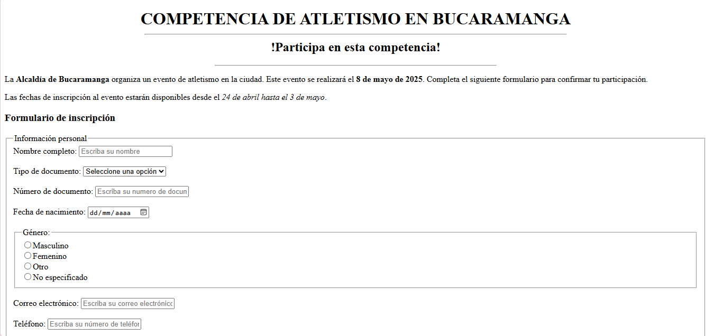

Mi portafolio
.jpg)
Estudiante de Desarrollo de Software con conocimientos prácticos en Python, HTML y CSS. Me caracterizo por tener habilidades comunicativas, trabajo en equipo y una fuerte capacidad para aprender y adaptarme a nuevas tecnologías. Me apasiona la programación y la resolución de problemas a través del desarrollo web y de software
Habilidades tecnicas
- Lenguajes de programación: Python, HTML, CSS
- Herramientas y tecnologías: Git, GitHub, Visual Studio Code
- Desarrollo web: Maquetación con HTML y CSS, principios de diseño responsive
- Otros: Comunicación efectiva, trabajo en equipo, pensamiento lógico
Proyectos destacados

Formularios en HTML
Este proyecto consiste en un formulario web desarrollado con HTML5 para registrar la participación de ciudadanos en una competencia de atletismo organizada por la Alcaldía de Bucaramanga.
Second slide label
Some representative placeholder content for the second slide.
Third slide label
Some representative placeholder content for the third slide.
Desarrollo de Software
Febrero 2025 - Actualidad
Intereses
- Miembro activo de comunidades tech
- Interes por el desarrollo frontend, Inteligencia Artificial
Idiomas
- Español: (Nativo)
- Ingles: Intermedio (B1) - Capaz de mantener conversaciones y leer documentación técnica.